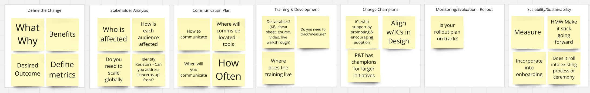

Portfolio Details
project information
- project: Design to Development Workflow
- client: Dayforce
- project date: 21 November, 2024
- tools: Miro, Dovetail, Figma, Jira, Smartsheets, Microsoft Forms, Microsoft Excel
what is this about?
at Dayforce, a multinational software development company with over 10,000 employees, our design system team identified a critical bottleneck in the product development lifecycle. Design handoffs between design and development teams were causing significant delays, miscommunications, and implementation inconsistencies across the suite of enterprise products.
Challenge
- Designers spent an average of 8 hours per week answering clarification questions from developers
- Developers reported that 40% of design specifications were not easily digested
- Implementation discrepancies between design intentions and final code resulted in an average of 5 rounds of revisions per feature
 Figure 1: overview of research board
Figure 1: overview of research board
how did i go through this journey
my approach to solving this complex organizational challenge involved four key phases:
discovery research
- conducted 21 in-depth interviews with designers, developers, project managers and product managers across all experience levels
- shadowed 3 scrum teams during handoff meetings to observe pain points firsthand
- performed competitive analysis of handoff practices at 6 comparable organizations such as SAP, Figma and Workday
- distributed a company-wide survey that garnered 72% response rate
this research revealed that our tooling was only part of the problem—the lack of a designer assigned to every scrum team with clear ownership and accountability was equally problematic.
 figure 2: initial questions coming up from research
figure 2: initial questions coming up from research
synthesis & strategy
- created detailed personas for both designers and developers, highlighting their distinct needs and pain points
- developed a service blueprint of the current handoff process, identifying 4 critical failure points
- hosted collaborative workshop titled michelin star recipe with cross-functional teams to ideate potential solutions
prototyping
- designed a standardized handoff template that captured all required specifications on Figma
- developed new documentation standards with visual annotations to reduce ambiguity on confluence/li>
- crafted new workflow diagrams showing revised approval pathways and feedback loops
testing & iteration
- selected three product teams of varying sizes to pilot the new process from both mobile and web
- documented unintended consequences and edge cases for further consideration
- refined the solution based on quantitative data and qualitative feedback
the things i found
the implementation of our new handoff workflow yielded remarkable improvements across multiple dimensions:
 Figure 6: Questions considered for implementationqualitative & quantitative
- time efficiency: Reduced designer time spent on handoff clarifications by 54% (from 8 to 3.8 hours weekly)
- implementation accuracy: Decreased revision cycles by 40% (from 5 to 3 rounds per feature)
- development speed: Shortened average implementation time by 42% (from 14 to 8.1 days)
- design system adoption: Increased usage of our design system components by 47%
- cross-functional collaboration: Teams reported stronger working relationships and mutual respect
so, what did i learn?
this project reinforced several important principles of effective UX research for me including, process is as important as tools; no software solution alone could have solved this problem without solving the underlying workflow issues. This made me realise in such work environments empathy works both ways in creating understanding between disciplines and developing a solution that worked for everyone. Finally I came to understand the importance of metrics. Establishing clear success metrics helped me maintain focus and know when it was right to park certain issues whilst keeping focus on demonstrating business values. Overall this project equiped me with all the right tools and I feel confident going into the professional field using my UX research skills.
say hi
lets have a coffee chat